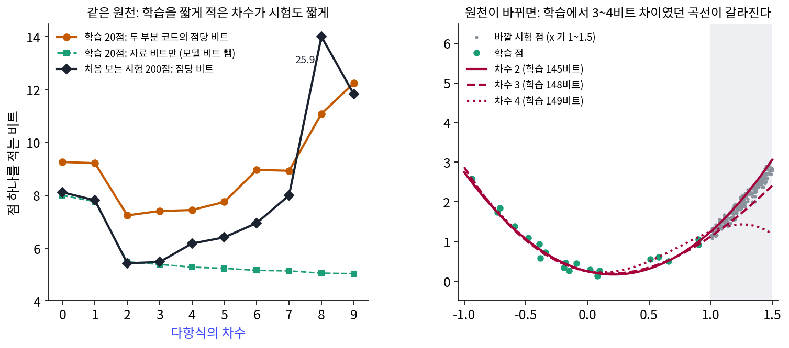
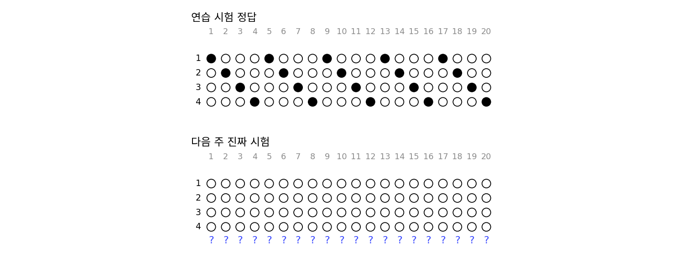
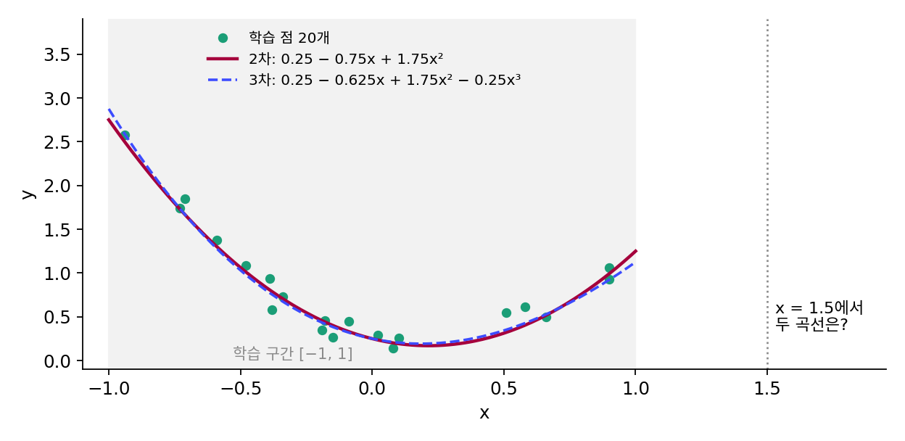
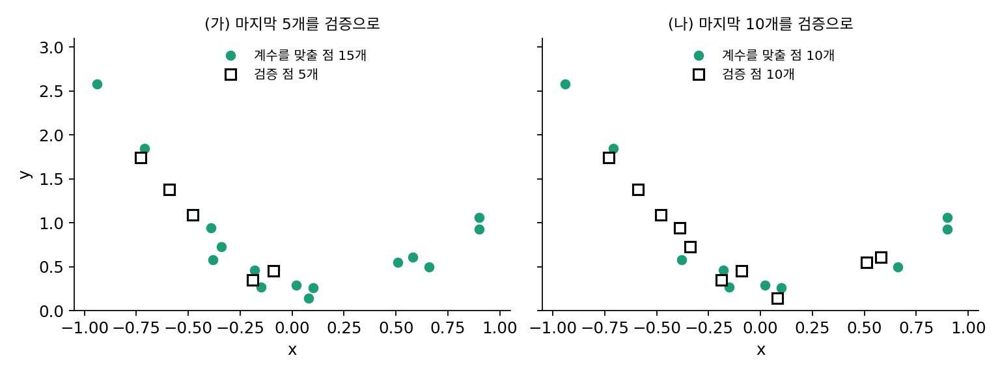

일반화란 무엇인가 (1): 학습을 짧게 적은 모델은 처음 보는 점도 짧게 적는다
두 부분 코드로 고른 2차 다항식은 학습 점 스무 개를 가장 짧게 적었지만, 우리가 정말 알고 싶은 것은 그 모델이 내일 잴 점에도 맞느냐다. 학습 점을 짧게 적는 일과 처음 보는 점에 맞는 일은 왜 함께 가야 할까? 학습 점만 보고 고른 모델이 처음 보는 점에서 실패하는 일은 흔한데, 9차 다항식은 학습 점에서는 오차가 가장 작았다.
같은 원천에서 200점 더
같은 참 곡선, 같은 노이즈에서 시험 점 200개를 따로 뽑되, 이번에는 아무것도 다시 맞추지 않는다. 학습 점으로 정한 모델(반올림한 계수와 σ̂)을 그대로 써서 시험 점을 적고, 점 하나에 드는 비트를 잰다(계산은 sources/mdl/s2_generalize.py).
| 차수 | 학습 20점, 두 부분 코드 (점당) | 학습 20점, 자료 비트만 (점당) | 시험 200점 (점당) | 시험 평균 제곱 오차 |
|---|---|---|---|---|
| 0 | 9.26 | 7.99 | 8.11 | 0.4427 |
| 1 | 9.21 | 7.76 | 7.81 | 0.2938 |
| 2 | 7.24 | 5.48 | 5.43 | 0.0103 |
| 3 | 7.40 | 5.38 | 5.48 | 0.0116 |
| 4 | 7.44 | 5.28 | 6.17 | 0.0233 |
| 6 | 8.96 | 5.16 | 6.95 | 0.0276 |
| 8 | 11.08 | 5.06 | 25.92 | 0.1916 |
| 9 | 12.24 | 5.04 | 11.82 | 0.8672 |
「자료 비트만」 칸은 모델 비트를 빼고 계수를 가장 정밀하게(간격 2^(−10)) 적었을 때의 값으로, 학습 오차와 같은 순서로 움직인다. 「자료 비트만」 칸은 차수를 올릴수록 줄기만 해서 9차를 고른다. 두 부분 코드의 칸은 2차에서 가장 짧고, 시험 점의 비트도 2차에서 5.43비트로 가장 짧다. 차수 열 개를 줄 세운 순위를 비교하면, 두 부분 코드와 시험 비트의 순위 상관은 0.952이고 자료 비트만과 시험 비트의 순위 상관은 −0.467이다. 참 곡선과 참 노이즈 0.1을 알고 적어도 시험 점 하나에 5.25비트가 들므로, 2차 다항식은 참 곡선의 5.25비트에 0.18비트 차이까지 다가갔다.
학습 점을 짧게 적었다는 것은 점들 사이의 규칙을 적은 비트로 찾았다는 뜻이므로, 그 규칙이 점을 낸 원천의 규칙이면 새 점에도 맞는다. 계수를 크게 키워 점마다 따라간 9차 다항식은 학습 점 스무 개에 맞춘 출렁임을 적느라 비트를 썼고, 그 출렁임은 원천에 없다. 학습 자료를 모델 비트까지 넣어 짧게 적는 모델이 같은 원천의 처음 보는 자료도 짧게 적는다는 이 관계를 이 책은 일반화 (짧은 설명이 처음 보는 자료에도 맞는 것 / generalization)의 첫째 정의로 삼는다. 둘째 정의는 외운 것과 배운 것을 가르는 자리에서 다시 다룬다.
원천이 바뀌면
정의 안의 「같은 원천」이라는 조건을 빼 보자. x를 1과 1.5 사이에서 뽑은 바깥 시험 점 200개는 학습 점이 한 번도 덮지 않은 구간에서 온다. 참 곡선 y = 0.3 − 0.8x + 1.7x²와 노이즈의 표준편차 0.1은 학습 점과 같다.

2차 다항식은 바깥에서도 점 하나에 6.13비트로 가장 짧았다. 그러나 학습에서 2차와 3~4비트 차이였던 3차와 4차는 바깥에서 9.82비트, 44.81비트로 벌어졌고, 6차 이상은 점 하나에 만 비트를 넘었다. 두 부분 코드와 바깥 시험 비트의 순위 상관은 0.661로 떨어졌다. 학습 구간 안에서 거의 같은 길이로 적히던 곡선들은 학습 구간 밖에서 무엇을 할지 학습 점으로부터 아무 정보도 받지 못했다. 짧은 설명이 처음 보는 자료에 맞으리라는 기대는, 처음 보는 자료가 학습 자료와 같은 원천에서 왔다는 조건 위에 서 있다.
ML에서: 검증 세트와 평평한 극소
실제 학습에서는 두 부분 코드를 직접 재는 대신, 학습에 쓰지 않은 검증 세트의 손실로 모델의 크기와 멈출 때를 고른다. 위의 표로 말하면 시험 점 칸의 비트가 가장 작은 차수를 고르는 방법이다. 최적화 책은 이 습관의 근거를, 시험 오차를 편향(평균 예측이 참값에서 빗나간 정도)과 분산(학습 자료가 바뀔 때 예측이 달라지는 정도)으로 쪼갠 편향–분산 분해로 보였다. 두 부분 코드의 모델 비트와 자료 비트가 맞바뀌는 모습도 같은 줄다리기를 다른 저울로 잰 것이다.
신경망의 일반화를 설명하려는 오래된 시도 하나도 같은 논리를 썼다. 호흐라이터와 슈미트후버는 1997년, 오차가 거의 변하지 않는 넓은 바닥(평평한 극소)의 가중치는 대충 적어도 되니 적은 비트로 적히고, 그래서 덜 오버피팅한다고 보았다. 위 장난감에서 계수의 반올림 간격을 넓혀도 자료 비트가 크게 늘지 않는 모델이 짧은 모델이었던 것과 같은 생각이다.
문제 4. 연습 시험의 답이 돌아간다
사지선다 연습 시험 20문항의 정답이 1, 2, 3, 4, 1, 2, 3, 4, …로 돌아간다는 것을 민준이 알아챘다. (가) 정답 20개를 그대로 외우면 몇 비트이고, 「되풀이 길이(1~8)와 무늬」로 외우면 몇 비트인가? (나) 다음 주 진짜 시험 20문항에서 민준의 규칙은 맞을까?


(가)는 문항마다 log₂ 4 = 2비트니까 40비트요. 규칙은 되풀이 길이에 3비트, 무늬 네 자리에 2비트씩 8비트, 합쳐서 11비트예요. 규칙이 훨씬 짧으니까 진짜 시험도 1234로 찍으면 되겠네요.

진짜 시험은 누가 내죠?
연습 시험은 학원 조교님이 냈고, 진짜 시험은 교수님이 내세요.

그럼 1234 되풀이는 조교님이 정답 번호를 1, 2, 3, 4 차례로 돌려 놓은 방식이야. 짧게 적혔다는 건 연습 시험 안에 규칙이 있다는 뜻이지, 진짜 시험에도 그 규칙이 있다는 뜻은 아니야. 같은 사람이 같은 방식으로 냈을 때만 기대할 수 있어.

그래요. 짧은 설명이 처음 보는 것에도 맞으려면, 처음 보는 것이 같은 원천에서 와야 해요.

작년 기출 문제집의 답 위치를 외워 갔다가 출제자가 바뀌어서 망한 선배 얘기를 들었어요. 그 선배도 규칙은 찾았는데 원천이 바뀐 거네요.
문제 5. 3비트 차이는 왜 바깥에서 벌어지는가
본문의 2차 다항식은 0.25 − 0.75x + 1.75x²로, 3차 다항식은 0.25 − 0.625x + 1.75x² − 0.25x³로 반올림되었다(두 부분 코드로 각각 144.8비트, 148.1비트). (가) 학습 구간 [−1, 1]에서 두 곡선의 차는 많아야 얼마인가? (나) x = 1.5에서 두 곡선의 값은 각각 얼마이고, 참 곡선 0.3 − 0.8x + 1.7x²의 값은 얼마인가? (다) 학습 점만으로 둘 가운데 어느 쪽이 바깥에서 맞을지 알 수 있는가?

두 곡선을 빼면 0.125x − 0.25x³이에요. 수치로 −1부터 1까지 찍어 보니까 가장 큰 차는 x = −1에서 0.125예요. 노이즈 표준편차가 0.1이니까 거의 구별이 안 되겠네요.
x = 1.5에서는요?

2차는 0.25 − 1.125 + 3.9375 = 3.0625, 3차는 거기에 0.1875 − 0.84375가 더해져서 2.4062예요. 차가 0.656으로, 안쪽보다 다섯 배 넘게 커졌어요. 참 곡선은 2.925니까 2차가 가까워요.
x³ 항이 범인이야. 안쪽에서는 |x| ≤ 1이라 0.25x³이 0.25를 넘지 못하는데, 1.5에서는 3.375배가 돼. 계수 하나 차이가 바깥에서 세제곱으로 커져.
그럼 (다)는요? 학습 점이 3차 항이 있는지 없는지를 말해 줄 수 있었을까요?
안쪽 차가 많아야 0.125면 학습 점으로는 둘을 3비트 남짓으로만 갈라요. 두 부분 코드가 2차를 고른 건 3차 계수 −0.25를 적는 비트가 그만한 값을 하지 못해서고요.
그래도 바깥에서 2차가 맞았잖아. 그럼 두 부분 코드가 맞힌 거 아니야?

그건 참 곡선이 마침 2차였기 때문이야. 참 곡선에 바깥에서만 커지는 3차 항이 숨어 있었다면, 학습 점은 그걸 알려 주지 못했을 거야.

그래요. 짧은 설명을 고르는 일은 같은 원천에서는 좋은 내기이지만, 학습 자료가 덮지 않은 곳에 대해서는 보증이 없어요.

테일러 전개를 배울 때 x = 0 근처에서 잘 맞던 다항식이 멀리 가면 엉뚱해지는 걸 봤어요. 근처의 정보로는 먼 곳의 고차 항을 알 수 없었어요.
문제 6. 검증 점 다섯 개로 고르면
신경망의 크기를 검증 세트로 고르듯 해 보자. 학습 점 20개 가운데 마지막 5개를 검증 점으로 떼고, 나머지 15개로 차수 0~9 다항식의 계수를 가장 정밀하게(간격 2^(−10)) 맞춘 뒤, 검증 점 5개를 그 모델로 적는 점당 비트로 차수를 골랐다. 검증 점당 비트는 차수 2에서 5.223, 차수 3에서 5.247, 차수 4에서 5.221이었고 나머지 차수는 5.5보다 컸다. (가) 몇 차를 고르게 되는가? 그 모델로 시험 점 200개를 적으면 점당 5.82비트가 드는데, 20점 전부로 두 부분 코드가 고른 2차와 비교하라. (나) 검증 점을 10개로 늘리면(계수는 나머지 10점으로 맞춘다) 차수 4가 검증 점당 5.612비트로 가장 짧고, 시험 점당 5.54비트다. 같은 10점으로 맞춘 2차는 검증 5.884비트, 시험 5.42비트였다. 검증 점을 늘려도 왜 나아지지 않았는가? (다) 검증 세트와 두 부분 코드는 각각 무엇을 내주고 무엇을 얻는가?

(가)는 4차가 5.221비트로 가장 작으니까 4차요. 시험에서는 5.82비트라, 두 부분 코드가 고른 2차의 5.43비트보다 0.39비트 길어요. 그런데 검증에서 2차와 4차는 0.002비트 차이밖에 안 나요.
0.002비트 차이로 차수를 고른 걸 믿을 수 있을까요?
검증 점이 다섯 개뿐이면, 어느 점이 검증으로 떨어졌느냐에 따라 순위가 얼마든지 뒤집힐 거예요. 거의 동점인 두 차수 가운데 하나를 고른 거라 운에 가까워요.

그럼 (나)처럼 검증 점을 늘리면 되잖아요. 아, 그런데 그만큼 계수를 맞출 점이 열 개로 줄어요. 열 점으로 맞춘 곡선들은 검증 점 열 개에서도 순위가 시험과 어긋나서, 시험에서 더 짧은 2차(5.42비트) 대신 4차(5.54비트)를 골랐어요.
(다)는요? 두 부분 코드는 이 고민을 어떻게 피했죠?
검증 세트는 모델 비트를 어떤 코드로 적을지 정하지 않아도 되는 대신, 학습에 쓸 점을 떼어 내야 하고 뗀 점이 적으면 고르는 일이 흔들려요.
두 부분 코드는 거꾸로 무엇을 내주죠?
스무 점을 다 학습에 쓰고 따로 떼지 않는 대신… 계수를 어떤 코드로 적을지 우리가 골라야 해요. 간격을 0.25로 할지 2^(−6)으로 할지 같은 거요. 그 고름이 결과에 들어가고요.
그래요. 자료가 넉넉한 신경망 학습에서는 검증 세트가 간편하고, 자료가 귀할 때는 학습 자료만으로 재는 길이가 값을 해요. 학습 손실만 보는 것은 둘 다 아니에요.
반 배치 시험을 다섯 문제만 내면 한 문제 실수로 반이 바뀌고, 문제를 늘리려고 수업 시간을 줄이면 배울 시간이 모자라는 거랑 비슷해요.